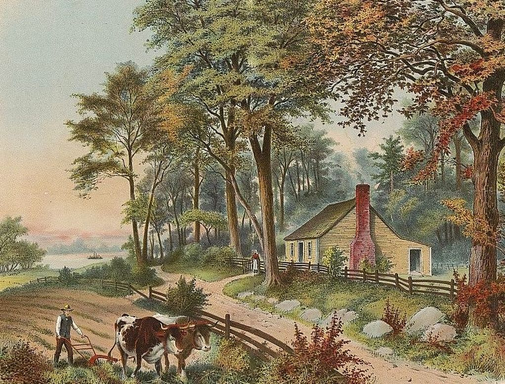
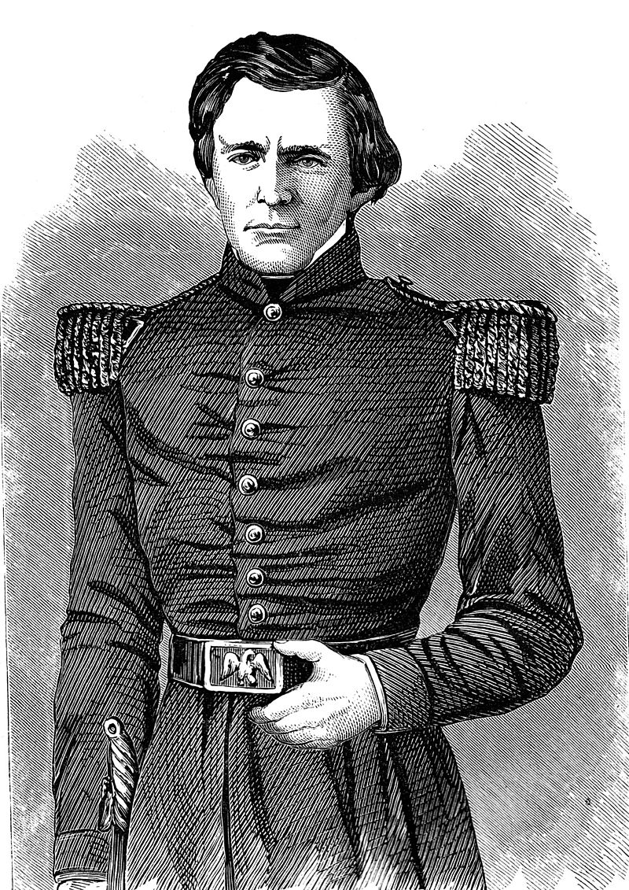
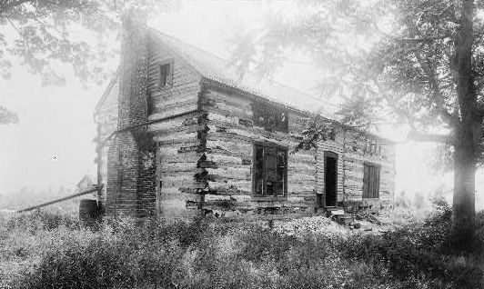

Ulysses S. Grant (born Hiram Ulysses Grant; April 27, 1822 – July 23, 1885) was an American soldier and politician who served as the 18th president of the United States from 1869 to 1877. Before his presidency, Grant led the Union Army as Commanding General of the United States Army in winning the American Civil War. As president, Grant worked with the Radical Republicans during Reconstruction to protect blacks, reestablish the public credit, while rebuilding the U.S. Navy.
Hiram Ulysses Grant was born in Point Pleasant, Ohio, on April 27, 1822, to Jesse Root Grant, a tanner and merchant, and Hannah Simpson Grant.[1] His ancestors Matthew and Priscilla Grant arrived aboard the ship Mary and John at Massachusetts Bay Colony in 1630.[2] Grant's great-grandfather fought in the French and Indian War, and his grandfather, Noah, served in the American Revolution at Bunker Hill.[3] Afterward, Noah settled in Pennsylvania and married Rachel Kelley, the daughter of an Irish pioneer.[4] Their son Jesse (Ulysses's father) was a Whig Party supporter and a fervent abolitionist.[5] Jesse Grant moved to Point Pleasant in 1820 and found work as a foreman in a tannery.[6] He soon met his future wife, Hannah, and the two were married on June 24, 1821.[7] Hannah descended from Presbyterian immigrants from Ballygawley in County Tyrone, Ireland.[8][9] Ten months after she was married, Hannah gave birth to Ulysses, her and Jesse's first child.[10] The boy's name, Ulysses, was drawn from ballots placed in a hat. To honor his father-in-law, Jesse declared the boy named Hiram Ulysses, though he would always refer to him as Ulysses.[11][b]
Grant's father wrote to Representative Thomas L. Hamer requesting that he nominate Ulysses to the United States Military Academy (USMA) at West Point, New York. Despite political differences with Jesse Root Grant, Hamer, a Democrat, nominated his 17-year-old son to West Point in Spring 1839.[23] Grant was accepted on July 1, although he doubted his academic abilities.[24] Hamer, unfamiliar with Grant, submitted an incorrect name to West Point. On September 14 Grant was enlisted Cadet "U.S. Grant" at the national academy.[25][d] His nickname at West Point became "Sam" among army colleagues since the initials "U.S." also stood for "Uncle Sam".[29][e]
At age 32, with no civilian vocation, Grant needed work to support his growing family. It was the beginning of seven years of financial struggles, poverty, and instability.[88] Grant's father offered him a place in the Galena, Illinois, branch of the family's leather business, but demanded Julia and the children stay in Missouri, with the Dents, or with the Grants in Kentucky. Grant and Julia declined the offer. In 1855, Grant farmed, using Julia's slave Dan, on his brother-in-law's property, Wish-ton-wish, near St. Louis.[89] The farm was not successful and to earn a living he sold firewood on St. Louis street corners.[90]
